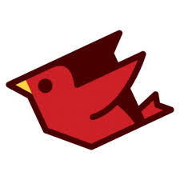

DICAS
| Gerando code coverage com PHPUnit e phpdbg | |
 |
Uma forma de melhorar a performance da geração do relatório de cobertura de códigos usando o PHPUnit. |
| Aprenda a aumentar a resiliência de suas aplicações Ruby | |
|  | Atualmente, para desenvolver um software moderno, acaba-se fazendo a integração com diversos outros softwares. Através de APIs é conectada em banco de dados uma conta com mecanismos de Cache, entre outros tipos. |
| Como estar entre os 15 melhores da competição Kaggle usando Python - Parte 01 | |
| Vamos mostrar na prática o passo a passo para criar uma aplicação bem simples com Elm. |
| Como melhorar seus códigos usando Object Calisthenics | |
 |
Neste projeto, foi possível aprimorarmos vários pontos importantes como TDD, Scrum, trabalho remoto, análise, integração contínua etc. |